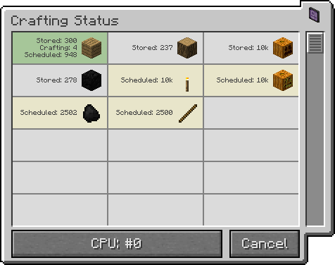
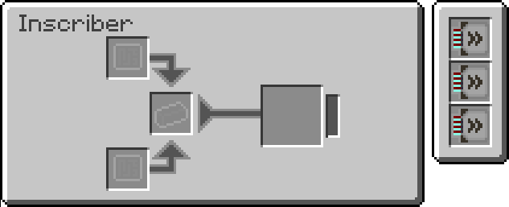
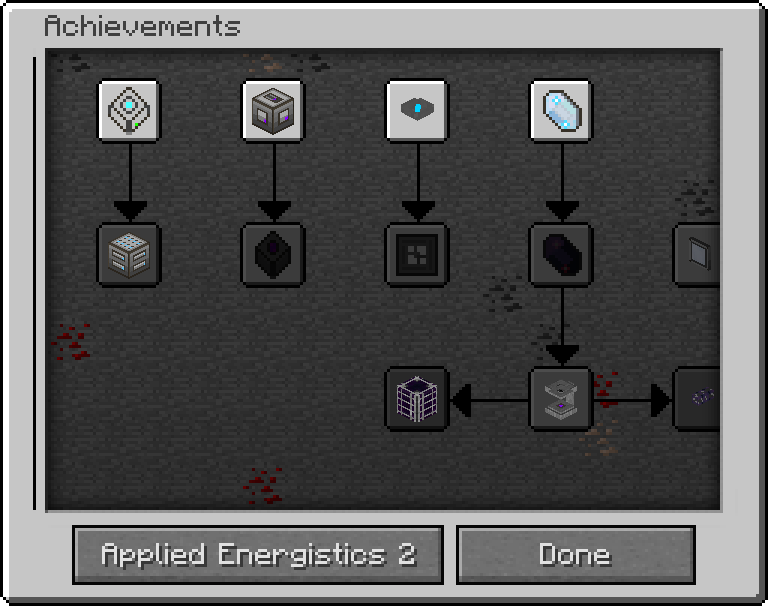
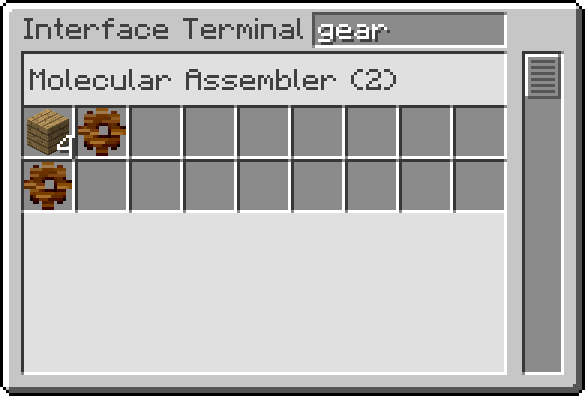
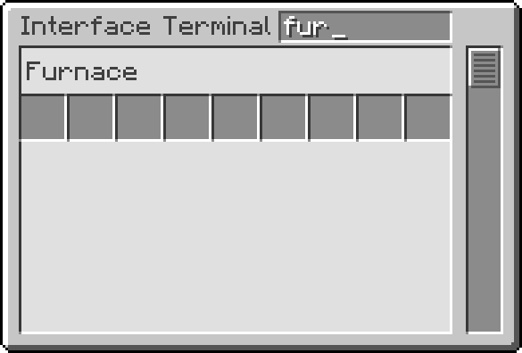
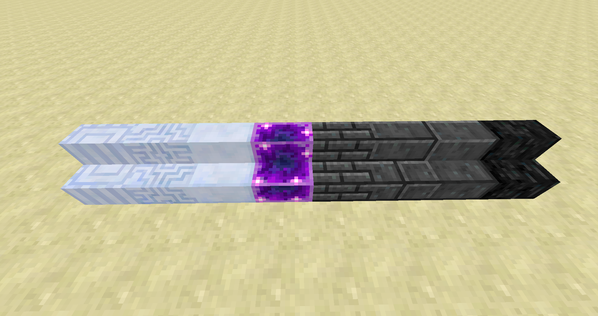

AE2 RV2 is a migration version to familiarize ourselves with the inherited code made by AlgorithmX2, focusing mainly on bug-fixing and making it an Open-Source-Software.
We offer a new issue and code management on Github and supply the latest version via TeamCity.
We added over 500 quality-increasing changes and fixed over the course of the last half year more than 100 bugs. The most important ones are listed below. One of the most requested features was the optional disabling of the channel mechanics. AlgorithmX2 shed his last blood and tears into finishing it, before tossing the project onto us.
We want to thank you for accepting us and supporting the new developer team!
The channel mechanics were introduced in AE2 as a way to add depth to the gameplay, with the idea of enabling an easy setup, while at the same time rewarding people who put thought into their network. The config option for infinite channels was a planned feature from the beginning, but he wanted to give people time to adjust to the system before declaring it bad on prejudices.
The config option will disable any channel related features, including ME Smart Cable, ME Dense Cable and ME Controller and any Achievements related to channels.
Important:
The colored crafting status indicates whether a crafting is currently scheduled or active.

Added a config option to disable that feature.
You can add Acceleration Card into the Inscriber to increase its processing speed.

25 Achievements were added related to Applied Energistics 2. You start with using the Meteorite Compass to find meteors and end with the epitome of ME, the QNB.

Now ME Interface Terminals have a search field, where you can search in various ways.


Added a stair for each block in AE2.
(from left to right)

Not less important, but less applicable to show-case:
Over 500 changes were made to improve the overall code quality for the developer and user, including many typographical and grammatical errors.
Credits to thatsIch, AlgorithmX2, Cisien, yueh, FireBall1725, Kamran Mackey, John Reed, Mitchell and more.
We rely on external contributions for localizations.
Here we want to thank bakaxyf, Anton, TheVikingWarrior, theelixzammuto, Yves, Al and more than 25 changes in over 6 different languages, them being:
If you do not see your language here, feel free to improve it by submitting your changes to us.
Deprecated features are scheduled for removal in RV3 Stable.
Was renamed to IStorageCell.getBytePerType( ItemStack )
It is encouraged to use the new IDefinitions.
The corresponding code for developers can be found here.
Use Upgrades.getTier() instead.
The corresponding code for developers can be found here.
Use Upgrades.getSupported() instead.
The corresponding code for developers can be found here.
Use Upgrades.registerItem( IItemDefinition, int ) or Upgrades.registerItem( ItemStack, int ) instead.
The corresponding code for developers can be found here and here.
Use ILocatableRegistry.getLocatableBy( long ) instead. It will returrn an ILocatable.
The corresponding code for developers can be found here.
In earlier versions, mods like MineTweaker had to hack into our code, to retrieve the data for inscribers, to modify the recipes or inject new recipes.
The corresponding code for developers can be found here.
Important:
AE2 cannot accept MJ from old BuildCraft as a power source anymore. Any references to MJ, in code or otherwise, were deleted. This includes display of current energy based on MJ.
Important:
All known issues are listed on the tracker marked with type-bug in our issue-tracker.
| Last modified on 05/19/2015 01:10 AM CDT By thatsIch |